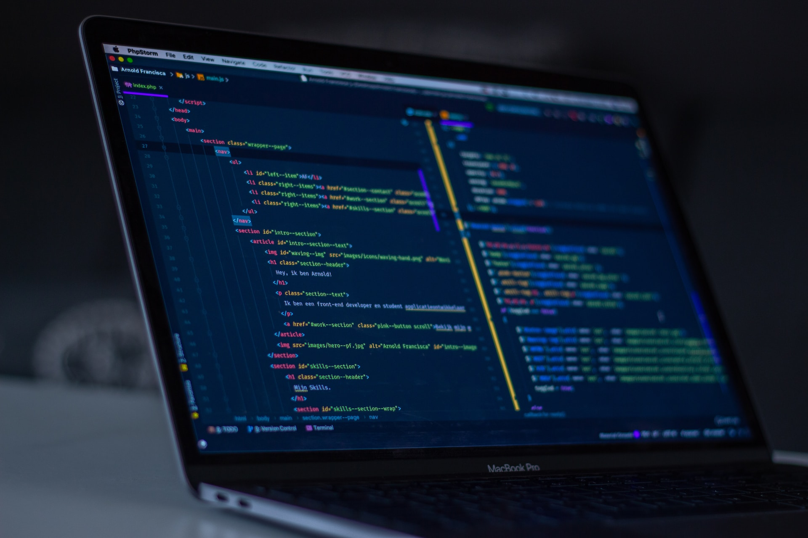

01
Proyectos destacados
La capa mas vendible del repositorio: piezas visuales, completas y faciles de enseñar.

Portfolio de ejemplos front-end
Esta portada concentra las piezas mas fuertes del curso: formularios, layouts responsive, animaciones, componentes interactivos y patrones listos para reutilizar.
Selección principal
Mapa del repositorio
01
La capa mas vendible del repositorio: piezas visuales, completas y faciles de enseñar.
02
Elementos concretos de interfaz para formularios, menus, loaders y estados interactivos.
03
Demos tecnicas de composicion modernas para responsive mas controlado y mantenible.
04
Movimiento, profundidad y feedback visual para interfaces con mas energia.
Lanzador rapido
:has().